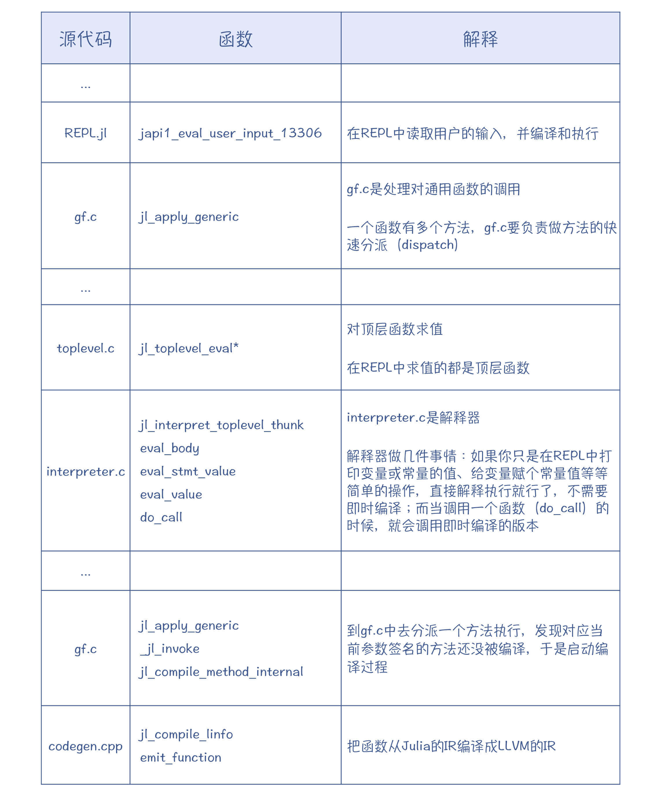
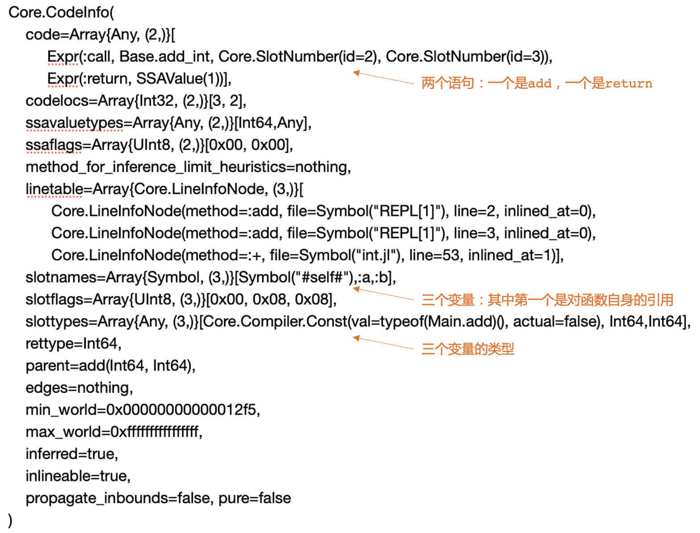
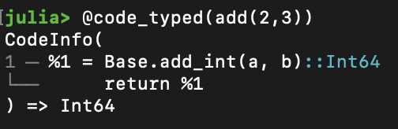
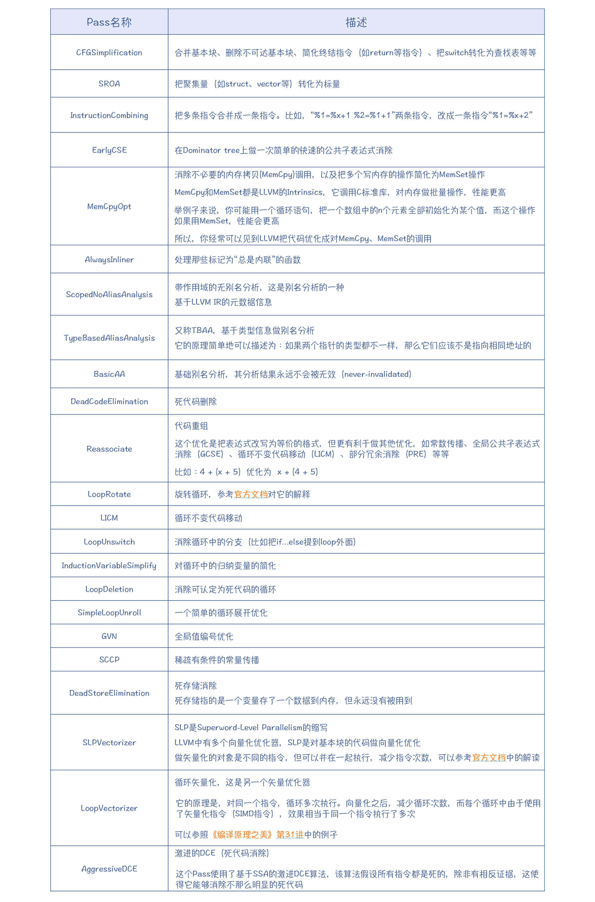
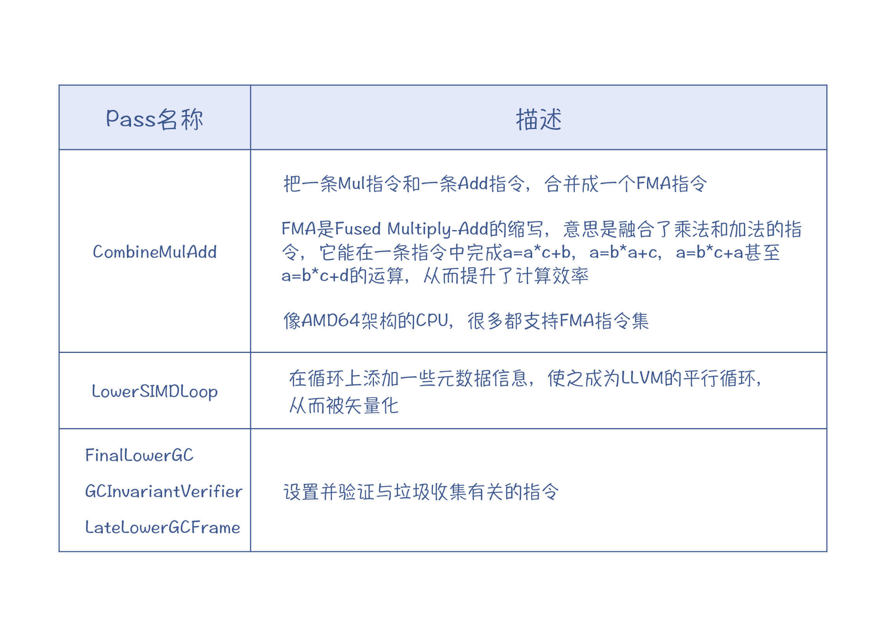
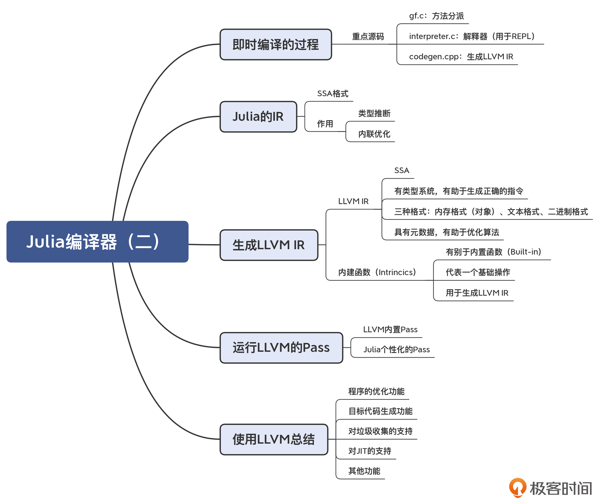

- 00 学习指南 如何学习这门编译原理实战课？.md
- 00 开篇词 在真实世界的编译器中游历.md
- 01 编译的全过程都悄悄做了哪些事情？.md
- 02 词法分析：用两种方式构造有限自动机.md
- 03 语法分析：两个基本功和两种算法思路.md
- 04 语义分析：让程序符合语义规则.md
- 05 运行时机制：程序如何运行，你有发言权.md
- 06 中间代码：不是只有一副面孔.md
- 07 代码优化：跟编译器做朋友，让你的代码飞起来.md
- 08 代码生成：如何实现机器相关的优化？.md
- 09 Java编译器（一）：手写的编译器有什么优势？.md
- 10 Java编译器（二）：语法分析之后，还要做些什么？.md
- 11 Java编译器（三）：属性分析和数据流分析.md
- 12 Java编译器（四）：去除语法糖和生成字节码.md
- 13 Java JIT编译器（一）：动手修改Graal编译器.md
- 14 Java JIT编译器（二）：Sea of Nodes为何如此强大？.md
- 15 Java JIT编译器（三）：探究内联和逃逸分析的算法原理.md
- 16 Java JIT编译器（四）：Graal的后端是如何工作的？.md
- 17 Python编译器（一）：如何用工具生成编译器？.md
- 18 Python编译器（二）：从AST到字节码.md
- 19 Python编译器（三）：运行时机制.md
- 20 JavaScript编译器（一）：V8的解析和编译过程.md
- 21 JavaScript编译器（二）：V8的解释器和优化编译器.md
- 22 Julia编译器（一）：如何让动态语言性能很高？.md
- 23 Julia编译器（二）：如何利用LLVM的优化和后端功能？.md
- 24 Go语言编译器：把它当作教科书吧.md
- 25 MySQL编译器（一）：解析一条SQL语句的执行过程.md
- 26 MySQL编译器（二）：编译技术如何帮你提升数据库性能？.md
- 27 课前导读：学习现代语言设计的正确姿势.md
- 28 前端总结：语言设计也有人机工程学.md
- 29 中端总结：不遗余力地进行代码优化.md
- 30 后端总结：充分发挥硬件的能力.md
- 31 运行时（一）：从0到语言级的虚拟化.md
- 32 运行时（二）：垃圾收集与语言的特性有关吗？.md
- 33 并发中的编译技术（一）：如何从语言层面支持线程？.md
- 34 并发中的编译技术（二）：如何从语言层面支持协程？.md
- 35 并发中的编译技术（三）：Erlang语言厉害在哪里？.md
- 36 高级特性（一）：揭秘元编程的实现机制.md
- 37 高级特性（二）：揭秘泛型编程的实现机制.md
- 38 综合实现（一）：如何实现面向对象编程？.md
- 39 综合实现（二）：如何实现函数式编程？.md
- 40 成果检验：方舟编译器的优势在哪里？.md
- 不定期加餐1 远程办公，需要你我具备什么样的素质？.md
- 不定期加餐2 学习技术的过程，其实是训练心理素质的过程.md
- 不定期加餐3 这几年，打动我的两本好书.md
- 不定期加餐4 从身边的牛人身上，我学到的一些优秀品质.md
- 不定期加餐5 借助实例，探究C++编译器的内部机制.md
- 划重点 7种编译器的核心概念与算法.md
- 期末答疑与总结 再次审视学习编译原理的作用.md
- 热点问题答疑 如何吃透7种真实的编译器？.md
- 用户故事 易昊：程序员不止有Bug和加班，还有诗和远方.md
- 知识地图 一起来复习编译技术核心概念与算法.md
- 结束语 实战是唯一标准！.md
23 Julia编译器（二）：如何利用LLVM的优化和后端功能？
你好，我是宫文学。
上一讲，我给你概要地介绍了一下Julia这门语言，带你一起解析了它的编译器的编译过程。另外我也讲到，Julia创造性地使用了LLVM，再加上它高效的分派机制，这就让一门脚本语言的运行速度，可以跟C、Java这种语言媲美。更重要的是，你用Julia本身，就可以编写需要高性能的数学函数包，而不用像Python那样，需要用另外的语言来编写（如C语言）高性能的代码。
那么今天这一讲，我就带你来了解一下Julia运用LLVM的一些细节。包括以下几个核心要点：
- 如何生成LLVM IR？
- 如何基于LLVM IR做优化？
- 如何利用内建（Intrinsics）函数实现性能优化和语义个性化？
这样，在深入解读了这些问题和知识点以后，你对如何正确地利用LLVM，就能建立一个直观的认识了，从而为自己使用LLVM打下很好的基础。
好，首先，我们来了解一下Julia做即时编译的过程。
即时编译的过程
我们用LLDB来跟踪一下生成IR的过程。
$ lldb #启动lldb
(lldb)attach --name julia #附加到julia进程
c #让julia进程继续运行
首先，在Julia的REPL中，输入一个简单的add函数的定义：
julia> function add(a, b)
x = a+b
x
end
接着，在LLDB或GDB中设置一个断点“br emit_funciton”，这个断点是在codegen.cpp中。
(lldb) br emit_function #添加断点
然后在Julia里执行函数add：
julia> add(2,3)
这会触发Julia的编译过程，并且程序会停在断点上。我整理了一下调用栈的信息，你可以看看，即时编译是如何被触发的。

通过跟踪执行和阅读源代码，你会发现Julia中最重要的几个源代码：
- gf.c：Julia以方法分派快速而著称。对于类似加法的这种运算，它会有上百个方法的实现，所以在运行时，就必须能迅速定位到准确的方法。分派就是在gf.c里。
- interpreter.c：它是Julia的解释器。虽然Julia中的函数都是即时编译的，但在REPL中的简单的交互，靠解释执行就可以了。
- codegen.cpp：生成LLVM IR的主要逻辑都在这里。
我希望你能自己动手跟踪执行一下，这样你就会彻底明白Julia的运行机制。
Julia的IR：采用SSA形式
在上一讲中，你已经通过@code_lowered和@code_typed宏，查看过了Julia的IR。
Julia的IR也经历了一个发展演化过程，它的IR最早不是SSA的，而是后来才改成了SSA形式。这一方面是因为，SSA真的是有优势，它能简化优化算法的编写；另一方面也能看出，SSA确实是趋势呀，我们目前接触到的Graal、V8和LLVM的IR，都是SSA格式的。
Julia的IR主要承担了两方面的任务。
第一是类型推断，推断出来的类型被保存到IR中，以便于生成正确版本的代码。
第二是基于这个IR做一些优化，其实主要就是实现了内联优化。内联优化是可以发生在比较早的阶段，你在Go的编译器中就会看到类似的现象。
你可以在Julia中写两个短的函数，让其中一个来调用另一个，看看它所生成的LLVM代码和汇编代码是否会被自动内联。
另外，你还可以查看一下传给emit_function函数的Julia IR是什么样子的。在LLDB里，你可以用下面的命令来显示src参数的值（其中，jl_(obj)是Julia为了调试方便提供的一个函数，它能够更好地显示Julia对象的信息，注意显示是在julia窗口中）。src参数里面包含了要编译的Julia代码的信息。
(lldb) expr jl_(src)
为了让你能更容易看懂，我稍微整理了一下输出的信息的格式：

你会发现，这跟用@code_typed(add(2,3))命令打印出来的信息是一致的，只不过宏里显示的信息会更加简洁：

接下来，查看emit_function函数，你就能够看到生成LLVM IR的整个过程。
生成LLVM IR
LLVM的IR有几个特点：
- 第一，它是SSA格式的。
- 第二，LLVM IR有一个类型系统。类型系统能帮助生成正确的机器码，因为不同的字长对应的机器码指令是不同的。
- 第三，LLVM的IR不像其他IR，一般只有内存格式，它还有文本格式和二进制格式。你完全可以用文本格式写一个程序，然后让LLVM读取，进行编译和执行。所以，LLVM的IR也可以叫做LLVM汇编。
- 第四，LLVM的指令有丰富的元数据，这些元数据能够被用于分析和优化工作中。
基本上，生成IR的程序没那么复杂，就是用简单的语法制导的翻译即可，从AST或别的IR生成LLVM的IR，属于那种比较幼稚的翻译方法。
采用这种方法，哪怕一开始生成的IR比较冗余，也没有关系，因为我们可以在后面的优化过程中继续做优化。
在生成的IR里，会用到Julia的内建函数（Intrinsics），它代表的是一些基础的功能。
在JavaScript的编译器里，我们已经接触过内置函数（Built-in）的概念了。而在Julia的编译器中，内建函数和内置函数其实是不同的概念。
内置函数是标准的Julia函数，它可以有多个方法，根据不同的类型来分派。比如，取最大值、最小值的函数max()、min()这些，都是内置函数。
而内建函数只能针对特定的参数类型，没有多分派的能力。Julia会把基础的操作，都变成对内建函数的调用。在上面示例的IR中，就有一个add_in()函数，也就是对整型做加法运算，它就是内建函数。内建函数的目的是生成LLVM IR。Julia中有近百个内置函数。在intrinsics.cpp中，有为这些内置函数生成LLVM IR的代码。
这就是Julia生成LLVM IR的过程：遍历Julia的IR，并调用LLVM的IRBuilder类，生成合适的IR。在此过程中，会遇到很多内建函数，并调用内建函数输出LLVM IR的逻辑。
运行LLVM的Pass
我们之所以会使用LLVM，很重要的一个原因就是利用它里面的丰富的优化算法。
LLVM的优化过程被标准化成了一个个的Pass，并由一个PassManager来管理。你可以查看jitlayers.cpp中的addOptimizationPasses()函数，看看Julia都使用了哪些Pass。

LoopRotate：官方文档 / SLPVectorizer：官方文档 /《编译原理之美》：第31讲
上面表格中的Pass都是LLVM中自带的Pass。你要注意，运用好这些Pass，会产生非常好的优化效果。比如，某个开源项目，由于对性能的要求比较高，所以即使在Windows平台上，仍然强烈建议使用Clang来编译，而Clang就是基于LLVM的。
除此之外，Julia还针对自己语言的特点，写了几个个性化的Pass。比如：

这些个性化的Pass是针对Julia本身的语言特点而编写的。比如对于垃圾收集，每种语言的实现策略都不太一样，因此就必须自己实现相应的Pass，去插入与垃圾收集有关的代码。再比如，Julia是面向科学计算的，比较在意数值计算的性能，所以自己写了两个Pass来更好地利用CPU的一些特殊指令集。
emit_function函数最后返回的是一个模块（Module）对象，这个模块里只有一个函数。这个模块会被加入到一个JuliaOJIT对象中进行集中管理。Julia可以从JuliaOJIT中，查找一个函数并执行，这就是Julia能够即时编译并运行的原因。
不过，我们刚才说的都是生成LLVM IR和基于IR做优化。那么，LLVM的IR又是如何生成机器码的呢？对于垃圾收集功能，LLVM是否能给予帮助呢？在使用LLVM方面还需要注意哪些方面的问题呢？
利用LLVM的正确姿势
在这里，我给你总结一下LLVM的功能，并带你探讨一下如何恰当地利用LLVM的功能。
通过这门课，你其实已经能够建立这种认识：编译器后端的工作量更大，某种意义上也更重要。如果我们去手工实现每个优化算法，为每种架构、每种ABI来生成代码，那不仅工作量会很大，而且还很容易遇到各种各样需要处理的Bug。
使用LLVM，就大大降低了优化算法和生成目标代码的工作量。LLVM的一个成功的前端是Clang，支持对C、C++和Objective-C的编译，并且编译速度和优化效果都很优秀。既然它能做好这几种语言的优化和代码生成，那么用来支持你的语言，你也应该放心。
总体来说，LLVM能给语言的设计者提供这样几种帮助：
- 程序的优化功能
你可以通过LLVM的API，从你的编译器的前端生成LLVM IR，然后再调用各种分析和优化的Pass进行处理，就能达到优化目标。
LLVM还提供了一个框架，让你能够编写自己的Pass，满足自己的一些个性化需求，就像Julia所做的那样。
LLVM IR还有元数据功能，来辅助一些优化算法的实现。比如，在做基于类型的别名分析（TPAA）的时候，需要用到在前端解析中获得类型信息的功能。你在生成LLVM IR的时候，就可以把这些类型信息附加上，这样有助于优化算法的运行。
- 目标代码生成功能
LLVM支持对x86、ARM、PowerPC等各种CPU架构生成代码的功能。同时，你应该还记得，在第8讲中，我说过ABI也会影响代码的生成。而LLVM，也支持Windows、Linux和macOS的不同的ABI。
另外，你已经知道，在目标代码生成的过程中，一般会需要三大优化算法：指令选择、寄存器分配和指令排序算法。LLVM对此同样也给予了很好的支持，你直接使用这些算法就行了。
最后，LLVM的代码生成功能对CPU厂家也很友好，因为这些算法都是目标独立（Target-independent）的。如果硬件厂家推出了一个新的CPU，那它可以用LLVM提供的TableGen工具，来描述这款新CPU的架构，这样我们就能使用LLVM来为它生成目标代码了。
- 对垃圾收集的支持
LLVM还支持垃圾收集的特性，比如会提供安全点、读屏障、写屏障功能等。这些知识点我会在第32讲“垃圾收集”的时候带你做详细的了解。
- 对Debug的支持
我们知道，代码的跟踪调试对于程序开发是很重要的。如果一门语言是生成机器码的，那么要实现跟踪调试，我们必须往代码里插入一些调试信息，比如目标代码对应的源代码的位置、符号表等。这些调试信息是符合DWARF（Debugging With Attributed Record Formats，使用有属性的记录格式进行调试）标准的，这样GDB、LLDB等各种调试工具，就可以使用这些调试信息进行调试了。
- 对JIT的支持
LLVM内置了对JIT的支持。你可以在运行时编译一个模块，生成的目标代码放在内存里，然后运行该模块。实际上，Julia的编译器能够像普通的解释型语言那样运行，就是运用了LLVM的JIT机制。
- 其他功能
LLVM还在不断提供新的支持，比如支持在程序链接的时候进行过程间的优化，等等。
总而言之，研究Julia的编译器，就为我们使用LLVM提供了一个很好的样本。你在有需要的时候，也可以作为参考。
课程小结
今天这一讲，我们主要研究了Julia如何实现中后端功能的，特别是在这个过程中，它是如何使用LLVM的，你要记住以下要点：
- Julia自己的IR也是采用SSA格式的。这个IR的主要用途是类型推断和内联优化。
- Julia的IR会被转化成LLVM的IR，从而进一步利用LLVM的功能。在转换过程中，会用到Julia的内建函数，这些内建函数代表了Julia语言中，抽象度比较高的运算功能，你可以拿它们跟V8的IR中，代表JavaScript运算的高级节点作类比，比如加法计算节点。这些内建函数会生成体现Julia语言语义的LLVM IR。
- 你可以使用LLVM的Pass来实现代码优化。不过使用哪些Pass、调用的顺序如何，是由你自己安排的，并且你还可以编写自己个性化的Pass。
- LLVM为程序优化和生成目标代码提供了可靠的支持，值得重视。而Julia为使用LLVM，就提供了一个很好的参考。
本讲的思维导图我也给你整理出来了，供你参考和复习回顾知识点：

一课一思
LLVM强调全生命周期优化的概念。那么我们来思考一个有趣的问题：能否让Julia也像Java的JIT功能一样，在运行时基于推理来做一些激进的优化？如何来实现呢？欢迎在留言区发表你的观点。
参考资料
- LLVM的官网：llvm.org。如果你想像Julia、Rust、Swift等语言一样充分利用LLVM，那么应该会经常到这里来查阅相关资料。
- LLVM的源代码。像LLVM这样的开源项目，不可能通过文档或者书籍来获得所有的信息。最后，你还是必须去阅读源代码，甚至要根据Clang等其他前端使用LLVM的输出做反向工程，才能掌握各种细节。LLVM的核心作者也推荐开发者源代码当作文档。
- Working with LLVM：Julia的开发者文档中，有对如何使用LLVM的介绍。
- LLVM’s Analysis and Transform Passes：对LLVM中的各种Pass的介绍。要想使用好LLVM，你就要熟悉这些Pass和它们的使用场景。
- 在《编译原理之美》的第25讲和第26讲，我对LLVM后端及其命令行工具做了介绍，并且还手工调用LLVM的API，示范了针对不同的语法结构（比如if结构）应该如何生成LLVM IR，最后即时编译并运行。你可以去参考看看。
© 2019 - 2023 Liangliang Lee. Powered by gin and hexo-theme-book.